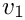

Table of Contents
- Conventions used below
- Block Jacobi — <tt>"Block Jacobi"</tt>
- Block Gauss–Seidel — <tt>"Block Gauss-Seidel"</tt>
- Hierarchical Block Gauss–Seidel — <tt>"Hierarchical Block Gauss-Seidel"</tt>
- Block LU 2×2 — <tt>"Block LU2x2"</tt>
- Block Add — <tt>"Block Add"</tt>
- Block Multiply — <tt>"Block Multiply"</tt>
- Iterative Preconditioner — <tt>"Iterative Preconditioner"</tt>
- Diagonal Scaling — <tt>"Diagonal Scaling"</tt>
- Explicit Diagonal Preconditioner — <tt>"Explicit Diagonal Preconditioner"</tt>
- Diagnostic Inverse — <tt>"Diagnostic Inverse"</tt>
- Adaptive — <tt>"Adaptive"</tt>
- Probing Preconditioner — <tt>"Probing Preconditioner"</tt>
- Identity — <tt>"Identity"</tt>
- Neumann Series — <tt>"Neumann Series"</tt>
- Choosing a method
This is the exhaustive reference for the built-in block preconditioners. Each is selected by setting an Inverse Library entry's "Type" to the string in the heading. The complete, authoritative list of "Type" strings is registered in PreconditionerFactory::initializePrecFactoryBuilder() (src/Teko_PreconditionerFactory.cpp); each factory reads its own keys in its initializeFromParameterList method.
The Navier–Stokes methods (NS SIMPLE, NS LSC, and PCD via Block LU2x2) have their own page: Navier–Stokes Preconditioners.
Conventions used below
- Inverse-valued parameters. Any parameter documented as "(inverse name)" takes the label of an Inverse Library entry as its value.
- Positional per-block overrides. Several factories accept
"Inverse Type <N>"and"Preconditioner Type <N>", where<N>is a 1-based block index ("Inverse Type 1","Inverse Type 2", …). A bare"Inverse Type"(no number) applies to all blocks; a numbered key overrides that block. - **
"Diagonal Type"/"Scaling Type"enum.** Where a parameter selects how a block is approximated by a diagonal, the accepted values are decoded byTeko::getDiagonalType(src/Teko_Utilities.cpp):
| Value | Meaning |
|---|---|
"Diagonal" | Use the matrix diagonal. |
"Lumped" | Row-sum (lumped) diagonal. |
"AbsRowSum" | Sum of absolute values in each row. |
"BlkDiag" | Block-diagonal (per point-block) inverse. |
| any other string | Treated as NotDiag → interpret the value as an inverse-library label instead of a diagonal approximation. |
Block Jacobi — <tt>"Block Jacobi"</tt>
Breaks the block operator into its diagonal blocks and applies an independent inverse to each: 
src/Teko_JacobiPreconditionerFactory.cpp)
| Parameter | Type | Default | Meaning |
|---|---|---|---|
"Inverse Type" | inverse name | Amesos2 if enabled, else empty | Inverse applied to every diagonal block. |
"Inverse Type <N>" | inverse name | — | Override for diagonal block <N> (1-based). |
"Preconditioner Type" | inverse name | — | Optional preconditioner factory for every block. |
"Preconditioner Type <N>" | inverse name | — | Per-block preconditioner override. |
Block Gauss–Seidel — <tt>"Block Gauss-Seidel"</tt>
A block triangular sweep using the diagonal-block inverses. Lower-triangular by default. (src/Teko_GaussSeidelPreconditionerFactory.cpp)
| Parameter | Type | Default | Meaning |
|---|---|---|---|
"Inverse Type" | inverse name | Amesos2 if enabled, else empty | Inverse for every diagonal block. |
"Inverse Type <N>" | inverse name | — | Per-block override (1-based). |
"Preconditioner Type" / "Preconditioner Type <N>" | inverse name | — | Optional per-block preconditioner factories. |
"Use Upper Triangle" | bool | false | Use the upper-triangular sweep instead of lower. |
Hierarchical Block Gauss–Seidel — <tt>"Hierarchical Block Gauss-Seidel"</tt>
A Gauss–Seidel sweep over groups of blocks rather than individual blocks — useful when several fields should be solved together as one hierarchical sub-block. (src/Teko_HierarchicalGaussSeidelPreconditionerFactory.cpp)
| Parameter | Type | Default | Meaning |
|---|---|---|---|
"Hierarchical Block <N>" | sublist | — | Definition of hierarchical group <N> (1-based). See below. |
"Use Upper Triangle" | bool | false | Upper- vs lower-triangular sweep over the groups. |
Each "Hierarchical Block <N>" sublist contains:
| Parameter | Type | Default | Meaning |
|---|---|---|---|
"Included Subblocks" | string | — | Comma-separated 1-based block ids in this group, e.g. "1,2". |
"Inverse Type" | inverse name | required | Inverse applied to the grouped sub-block. |
"Preconditioner Type" | inverse name | — | Optional preconditioner factory for the group. |
Worked example — group blocks 1 and 2 into one hierarchical block solved by a preconditioned GMRES (see nested solves), and solve block 3 on its own with ILU:
Here "PrecGMRES" and "ILU" are other Inverse Library entries, so each hierarchical group can itself use a nested, preconditioned Krylov solve.
Block LU 2×2 — <tt>"Block LU2x2"</tt>
An LDU (or Golub–Wathen) block factorization of a 2×2 system, using a pluggable Schur-complement strategy. (src/Teko_LU2x2PreconditionerFactory.cpp)
| Parameter | Type | Default | Meaning |
|---|---|---|---|
"Use LDU" | bool | true | Full LDU factorization; false selects the Golub–Wathen form. |
"Strategy Name" | string | required | Schur-complement strategy: "Diagonal Strategy" or "NS PCD Strategy". |
"Strategy Settings" | sublist | — | Parameters passed to the chosen strategy. |
Diagonal Strategy (<tt>"Strategy Name" = "Diagonal Strategy"</tt>)
Approximates the Schur complement using a diagonal of the (0,0) block. (src/Teko_LU2x2DiagonalStrategy.cpp)
| Parameter | Type | Default | Meaning |
|---|---|---|---|
"Inverse Type" | inverse name | — | Default inverse for both sub-solves. |
"Inverse A00 Type" | inverse name | — | Inverse of the (0,0) block. |
"Inverse Schur Type" | inverse name | — | Inverse of the Schur complement. |
"Diagonal Type" | enum (see above) | — | How the (0,0) block is approximated in the Schur complement. |
The "NS PCD Strategy" is documented on the Navier–Stokes page.
Block Add — <tt>"Block Add"</tt>
Forms the sum of two preconditioners: src/Teko_AddPreconditionerFactory.cpp)
| Parameter | Type | Default | Meaning |
|---|---|---|---|
"Preconditioner A" | inverse name | required | First operand (a library label). |
"Preconditioner B" | inverse name | required | Second operand. |
Each operand entry supplies its own "Preconditioner Type" + "Preconditioner Settings".
Block Multiply — <tt>"Block Multiply"</tt>
Forms the product of two preconditioners: 
src/Teko_MultPreconditionerFactory.cpp)
| Parameter | Type | Default | Meaning |
|---|---|---|---|
"Preconditioner A" | inverse name | required | First factor. |
"Preconditioner B" | inverse name | required | Second factor. |
Iterative Preconditioner — <tt>"Iterative Preconditioner"</tt>
Applies a base preconditioner repeatedly as a fixed-point (residual-correction) iteration. (src/Teko_IterativePreconditionerFactory.cpp)
| Parameter | Type | Default | Meaning |
|---|---|---|---|
"Iteration Count" | int | 1 | Number of times to apply the base preconditioner. |
"Preconditioner Type" | inverse name | required | The base preconditioner to iterate. |
Diagonal Scaling — <tt>"Diagonal Scaling"</tt>
Symmetrically scales the operator by a diagonal before applying an inner inverse. (src/Teko_DiagonallyScaledPreconditionerFactory.cpp)
| Parameter | Type | Default | Meaning |
|---|---|---|---|
"Inverse Factory" | inverse name | required | Inner inverse applied to the scaled operator. |
"Scaling Type" | string | "Row" | "Row" → row scaling; any other value → column scaling. |
"Diagonal Type" | enum (see above) | — | Which diagonal to scale by. |
Explicit Diagonal Preconditioner — <tt>"Explicit Diagonal Preconditioner"</tt>
Explicitly forms and inverts a (block-)diagonal approximation of the operator. (src/Teko_DiagonalPreconditionerFactory.cpp)
| Parameter | Type | Default | Meaning |
|---|---|---|---|
"Diagonal Type" | enum (see above) | "BlkDiag" | Diagonal approximation to form. |
"blockdiagmatrix: list" | sublist | — | Read only when "Diagonal Type" = "BlkDiag". Contains "apply mode" (default "invert"). |
Diagnostic Inverse — <tt>"Diagnostic Inverse"</tt>
A pass-through wrapper that times and (optionally) reports the residual of an inner inverse — for debugging and profiling. (src/Teko_DiagnosticPreconditionerFactory.cpp)
| Parameter | Type | Default | Meaning |
|---|---|---|---|
"Inverse Factory" | inverse name | — | The inverse to wrap. |
"Preconditioner Factory" | inverse name | — | Alternatively, a preconditioner factory to wrap. |
"Descriptive Label" | string | — | Label used in the diagnostic output. |
"Print Residual" | bool | false | Print the residual on each apply. |
Adaptive — <tt>"Adaptive"</tt>
Chooses among a list of inverses of increasing cost/size, adapting to the achieved residual reduction. (src/Teko_AdaptivePreconditionerFactory.cpp)
| Parameter | Type | Default | Meaning |
|---|---|---|---|
"Target Residual Reduction" | double | 0.1 | Residual reduction the preconditioner tries to achieve. |
"Number of Successful Applications Before Resetting" | int | 100 | How many good applies before re-evaluating. |
"Inverse Type <N>" | inverse name | — | The <N>-th candidate inverse (1-based). |
"Preconditioner Type <N>" | inverse name | — | Optional preconditioner for candidate <N>. |
"Maximum Size <N>" | int | — | Size threshold for candidate <N>. |
Probing Preconditioner — <tt>"Probing Preconditioner"</tt>
Builds a sparse probing approximation to an (implicitly defined) operator and inverts that. Requires a probing graph describing the sparsity to recover. (src/Teko_ProbingPreconditionerFactory.cpp)
| Parameter | Type | Default | Meaning |
|---|---|---|---|
"Inverse Type" | inverse name | Ifpack2 | Inverse applied to the probed approximation. |
"Probing Graph Operator" | — | — | Operator whose graph defines the probing sparsity. |
"Probing Graph" | — | — | The probing graph directly. |
"User Will Set Probing Graph" | bool | false | If true, the graph is supplied later (via the API or the RequestHandler message "Probing Graph"). |
Identity — <tt>"Identity"</tt>
The (scaled) identity — mainly a building block or a no-op inverse. (src/Teko_IdentityPreconditionerFactory.cpp)
| Parameter | Type | Default | Meaning |
|---|---|---|---|
"Scaling" | double | 1.0 | Scalar multiple of the identity. |
Neumann Series — <tt>"Neumann Series"</tt>
A truncated Neumann-series approximate inverse. Registered as a Stratimikos preconditioner (so it appears in the Stratimikos-preconditioner list, not the Teko block list), and it strictly validates its parameters. (src/Teko_NeumannSeriesPreconditionerFactory.hpp)
| Parameter | Type | Default | Meaning |
|---|---|---|---|
"Number of Terms" | int | 1 | Number of series terms to retain. |
"Scaling Type" | string | "None" | Series scaling; validated against a fixed option set. |
Choosing a method
| If you want… | Consider |
|---|---|
| A simple, robust starting point for a block system | Block Gauss-Seidel (often stronger than Block Jacobi) |
| Different solvers per field | Block Jacobi / Block Gauss-Seidel with "Inverse Type <N>" |
| A saddle-point / 2×2 system with a good Schur approximation | Block LU2x2 |
| An incompressible Navier–Stokes solver | NS SIMPLE or NS LSC — see Navier–Stokes |
| To combine two preconditioners | Block Add / Block Multiply |
| To strengthen a weak preconditioner cheaply | Iterative Preconditioner |
| To profile where time goes | wrap any inverse in Diagnostic Inverse |